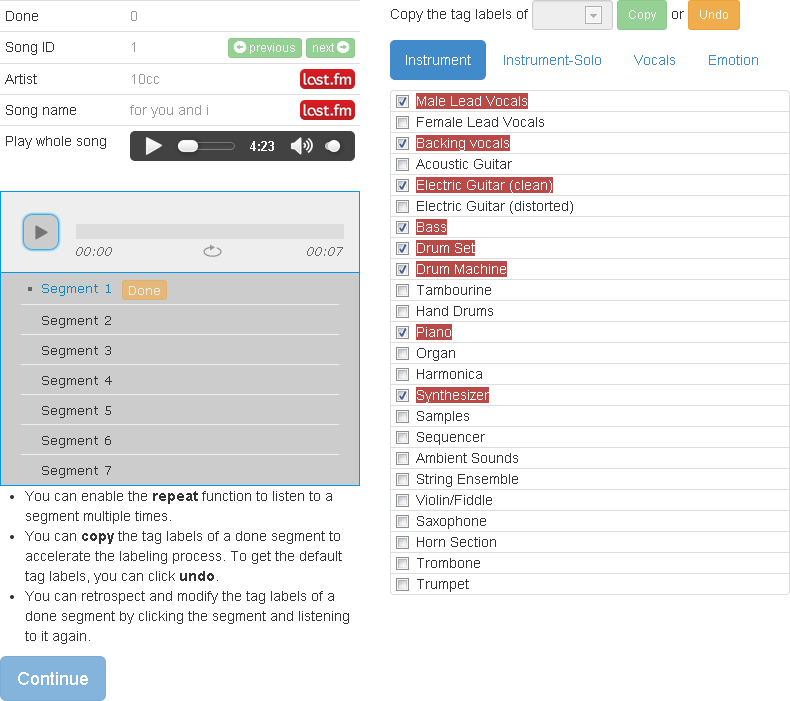

Short-Time Music Tag Annotation
This task is held by MAC Lab @ Academia Sinica. If you have any question, please contact Shuo-Yang Wang.
You must be at least 18 years old to participate in this task.
Technical Requirements
- This site works in Firefox 10+, Chrome 17+, Safari 5+, or Internet Explorer 10+.
- Please allow Javascript on this site.
- Please maximize your browser window.
- This task requires to listen to music, so please make sure you can play and hear the sound. A headphone is recommended for better acoustic quality.
Instructions
This is a music tag labeling task. There are 500 songs in the database. For each song, you are requested to in turn listen to at most 10 representative short-time segments (each is 5~15 second) of a song and label the tags of each segment.
Please note the following rules:
- The musical events may vary within the segment. Please identify the explicit concepts in terms of the listed tags according to the major middle (e.g. 70%) part of a segment. For example, if a segment is 6 second long, and the vocal unfolds from the 5-th second, this segment may not have to be labeled with vocal related tags, such as Instrument_-_Male_Lead_Vocals-Solo, Instrument_-_Backing_vocals, and Vocals-Emotional.
- Please consider each segment independently. When listening to a specific segment, there is no need to take the other segments into account.
- It is OK to take lyrics into account. For example, lyrics may play an important role when labeling emotion related tags.
What are the tags
There are totally 144 tags spanning eight categories. For each segment, please annotate the relevant tags .
- Instrument (multiple)
- Identify the instruments or the sounds that occur in the major (middle) part of the segment.
- Instrument-Solo (single)
- Recognize the solo instrument or sound in the segment. You may not need to select tags from this category if all the instruments are playing the background music. Only one tag in this category can be selected.
- Vocals (multiple)
- If the segment is considered having vocals in the major middle part, please determine the vocal characteristics of the singer. Otherwise, uncheck all the tags that belong to this category.
- Song (multiple)
- Identify the song concepts related to the acoustic qualities of the song, artist and recording.
- Genre (multiple)
- Determine the genres performed in the music. A segment can belong to multiple genres in this category. Althought musical genres is usually consistent across the song, we recommend to discover the variation of playing styles from segment to segment.
- Genre-Best (single)
- Select a specific genre from this category that best describes the segment. In other word, only the best genere can be chosen for a segment. We suggest to determine the global genre that best summarizes the song that the segment belongs to.
- Emotion (multiple)
- Identify your perceived emotion, feeling, or mood of the segment.
- Usage (multiple)
- Suggest the contexts that the segment is suitable for. Because usage tags are more global, the selected tags are supposed to be relevant to the song that the segment belongs to.
How to label the tags
The figure on the righthand side demonstrates an example of the tag selection user interface. Each tag has a checkbox showing whether the tag is selected or not. To facilitate the labeling task, in each category our system will rank a list of tags and suggest some relevant tags (initially checked) in the list according the estimated associations between the tags and the segment. However, the suggested tags might be wrong, and the system could also miss some tags that are actually relevant to the segment. Given the machine suggested tags, you have to manully check or uncheck tags in the list according to what you have acoustically perceived.
When annotating, please note:
- Onece you have finished listening to a segment, the segment block will become green. You are then allowed to click "done" and submit the result of the segment.
- You can retrospect and modify the tag checkboxes by clicking on previous segments.
- Once you complete and qualify the above constraints, you are allowed to submit the results of the song.

Continue
Page 1 / 5